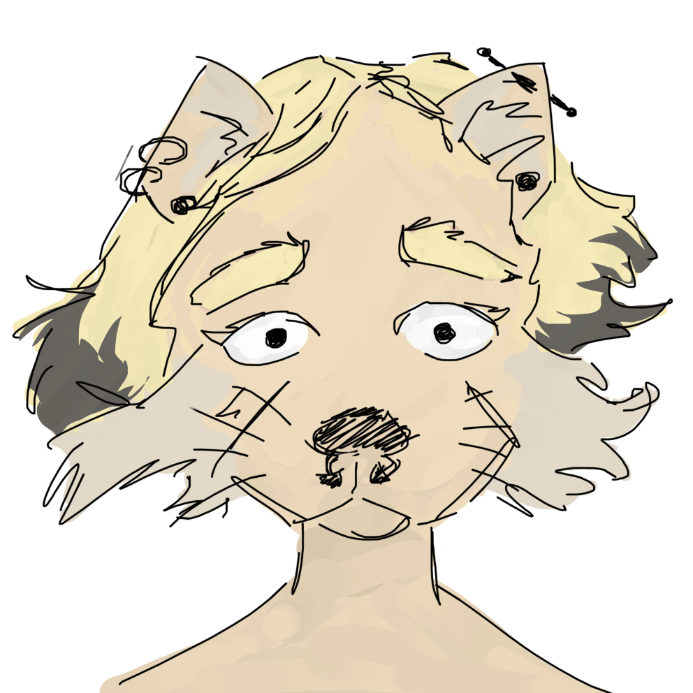

Look at Me
About Me
My name is Grant, I'm 23 and work as an independent contractor for insurance companies. I love to rock climb to stay in shape. I made this website because its a great way for me to put down all my thoughts about my fantasy world. Everything used to be in a massive google doc that was impossible to navigate.

Livia
Livia is my gf and she is super cool.
Top 10 Authors
- Lev Grossman
- Jack London
- Brandon Sanderson
- Scott Lynch
- Robert Jordan
- Brian Mcclellan
- Joe Abercrombie
- H. P. Lovecraft
- Nicholas Eames
- Jung Chang
The Magicians!
The Magicians by Lev Grossman is my favorite book series that I've read. The first book follows the main character Quentin who is a depressed teen, a character that I resonated with as a depressed teen. I loved the book so much that I put the series down for a few years because it had an ending I really liked at the time. When I picked it back up the book started with a little older and mature Quentin. The series showed the best display of character growth of any book or tv or media that i've ever seen. By the end of the book Quentin had changed completely and I was in a better place with myself. I finished the series a lot different than how I started it, the series felt like the main character was growing up alongside me. And light spoilers but Quentin's magical discipline was the best set up and pay off in a book that I've read.
The Sea Wolf!
Everything about this book is perfect, the setting, characters, and themes all fit seamlessly together.
The Stormlight Archive / Mistborn Trilogy
The Stormlight Archive was my introduction to fantasy reading. I picked it up to help the tedium of a long road trip unaware of the path it would take me down. If nothing else the series is grand, the series has great pacing. It starts out small scale and has a very natural, easy progression of power and scale. Worldbuilding is my favorite aspect of the series. Roshar feels alive and so different from earth. The great storm affects geography and civilization in fascinating ways. The series is full of characters. I loved routing for Kaladin, he is an altruistic, virtuous hero character that always puts others before himself. Characters like that can easily get in a trap of altruism and seem one dimensional or boring so Sanderson had to give him some flaws. And since they weren't coming from within, Sander put Kaladin through the ringer to give him some good old fashioned emotional damage. I think Sanderson did a very good job of portraying mental illness which isn't a topic I've come across in any of my other series. Dalinar is my favorite character, but there are so many to choose from: The Stump, Taravangian, Hoid, Teft, Rock, Navani are all great characters. The one character I'd say I don't like is Lift. Her concept is cool but the execution feels too “hey kids” millennial humor. In spite of its length the series stays captivating the entire way through. It had lots of great moments and is a great start to the fantasy genre.
Gentleman Bastards
Gentleman Bastards was a much needed relief for me after reading stormlight and wheel of time back to back. Sanderson and Jordan both created epic fantasies on massive world ending scales, use basically invisible prose, with mostly virtuous, powerful main characters and light swearing. This series was a welcome change, the whole first book took place in a single city, every sentence in the series is flowery and over the top, the main characters were edgy weak bastards, and they used normal people swearing. It feels so weak when a character's close friend dies and they look up into the rain and scream “storm it”. Normally I might have said that Lynch was a little too overzealous and edgy with the swearing but it just felt so cathartic at the time. The main draw for me was the city of Camorr, it was so rich and I loved that it was a port city and had water running throughout.
Wheel of Time
I read the Wheel of Time series after I had just finished the Stormlight Archive and wanted something deep and rich to sink my teeth into. Rand was a fantastic protagonist, following him throughout the story was a treasure. It was an amazing take on the chosen one trope that was pulled off in the greatest way I could imagine. I felt such an incredible catharsis when Rand hugged his father I almost cried. Him having three wives was kinda weird but definitely original. The different civilizations were interesting, the Aiel in particular. And the Aes Sedai were a cool concept on magical tyranny similar to a more noble version of the one in Gentleman Bastards. It had lots of important female characters which is a nice change of pace.
Powder Mage
Powder Mage by Brian Meclellan has a victorian-esk setting as opposed to the usual medieval era civilization. The book's main draw for me is how the plot develops and the events that happen during the book. The magic system has a couple unique elements to it that I really enjoyed. My favorite type of magic user are people called nacks. A nack is a person that was given a random buff like the ability to breathe underwater or never needing to eat food. I just love the concept, it's super fun and creative while being really simple.
First Law
Fantastic series, in general my favtorie part about books are the setting and then the plot. Abercrombie stands out as an exception to that rule, reading this book I fell in love with his characters. This series would have been higher but Sand's internal dialogue was very repetitive and because of some of the things Logen did near the end of the book.
H. P. Lovecraft
Guy was sus, books were pog and influential, my favorite is the one with The Picture in the House and The Horror at Red Hook.
Kings of the Wyld
Kings of the Wyld is the weirdest book of the bunch, it is the only stand alone book on the list and feels like it was written by a divorced man who watched football, peaked in highschool, has multiple daughters, and no sons. It was a super fun lighthearted read, the book is not trying to reinvent the wheel. The world would be right at home in any Arthurian legend aside from the massive deadly video game forest called the Wyld full of every magical beast and item. The book can be summarized by the phrase “getting the band back together” the characters are retired adventurers who are all “too old for this shit”. It was the funniest book of the series and has a gay wizard with incurable forest aids.
Wild Swans
Is incredible.

Favorite
- End of the Fucking World
- The Great Pretender
- Bullet Train
- Porco Rosso
Accomplishments
- Ragnar Race: 200 mile relay race that takes about 24 hours
- Nasa: I did about a 9 month long paid internship with Nasa
- Two Degrees: I got a degree in Computer Science and History at community college, but real college was too expensive so I stopped there.
- Insurance Adjusting: I completed a three month deployment as an insurance adjuster, I had to work 13-14 hour days and get yelled at a lot.